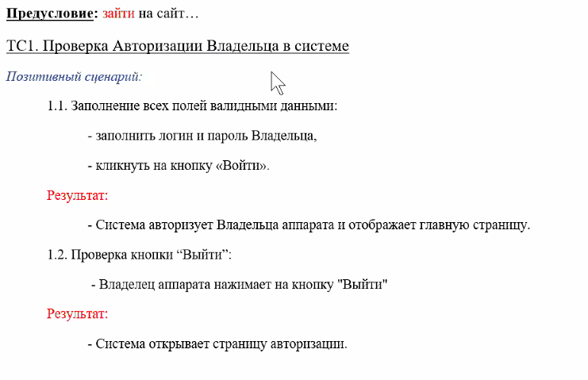

Артефакты тестирования
Общепринятые мнструменты тестирования ПО
Что можно вообще проверять (Test layers)
- Documentation
- Prototype
- Design
- Code
- Software (Web app, mobile app, game, website, chatbot and other)
- Hardware (Нагрузочное тестирование, стресс тесты и пр.)
Примерная работа тестировщика: Test plan (в виде тасков) -> Testing (По чеклистам или тест-кейсам) -> Report.
- Карта приложения
- Иерархия страниц (экранов) приложения или сайта. С её помощью проще создавать Test plan.
- Можно дать задачу по разработке карты дизайнеру (так как у них тоже должны быть) или составить самому
- Карта нужна для визуализации последующего тестового покрытия приложения
- Mайндмэппинг (Mind-map), тоже можно составлять
- Декомпозиция приложения на модули/подмодули и тестировать по отдельности.
- Test strategy, Test plan и Test design, пользовательский и тестовый сценарий
- Документация, тестовое покрытие (нужно документировать, может меняться)
- Как тестить, что тестить, когда тестить, чем тестить, сроки
- Тестовые и пользовательские сценарии, пользовательские истории (user stories)
- Перечень работ, критерии качества, ресурсы
- Разработка тест-кейсов, чеклистов
- Подбор инструментов, автоматизация, �рабочий процесс тестировщика
- Тестовая стратегия,
- Чеклисты и Тест-кейсы
- Test-suite (набор тест-кейсов)
- Report
- Нужен апрув от тестировщика, что функционал готов и его можно деплоить/релизить.
- Описание новых найденных багов.
- Тестировщик на стороне пользователя, и критические баги не должны попасть в релиз.
Test strategy
Пишется опытными тестировщиками или лидами. Обычно не редактируется после создания. Уже практически не используется, либо используются шаблонные.
Похож на тест-план, но более высокоуровневый документ, чем тестовый план. Документируется тоже самое, что и в тест-планах, но более абстрактно. Что будет smoke, func, unfunc? "Сырой" тест-план.
- Что будет покрываться ручными тестами, а что авто-тестами?
- Что будет считаться smoke, интеграционным и т.д.
- Начало, окончание, инструменты.
Test plan
План по тестированию на основе документации. Пишется опытными тестировщиками или лидами. Лучше делать упрощенный и лаконичный (без лишней воды).
- Объект тестирования (Сайт, приложение, ПО, среда тестирования)
- Стратегия тестирования (методы, ресурсы, этапы). Как тестировать?
- Разворачивание тестовой среды, процедуры
- Критерии для начала и окончания тестирования. Приёмка. (Когда можно начать тестировать? Когда тестирование будет закончено?)
- Ресурсы для тестирования. Команда, оборудование, сроки, ПО и т. д.
- Условия и оценка рисков.
Нормативная документация в РФ по тестированию
Иногда требуются.
- ПМИ - программа и методика испытаний.
- ГОСТ 19.301-79 Программа и методика испытаний. Требования к содержанию и оформлению;
- ГОСТ 34.603-92 Информационная технология. Виды испытаний автоматизированных систем;
- РД 50-34.698-90 Автоматизированные системы. Требования к содержанию документов
Новый проект
- Написание тестового плана и стратегии с нуля, либо взять готовый, если проект шаблонный
- Работа по тестовому плану
Существующий проект
- Пользоваться уже созданным тест-планом, если он уже есть, если его нет, то нужно влиться в уже существующий процесс тестирования.
- Проверять нужно конкретно по задаче, лишнего делать не нужно.
Test design
Это принципы, которые помогают создавать тест-кейсы с входными данными. Этап разработки тестовой документации, на котором пишуться тест-кейсы по уже готовым тестовым сценариям. Задача - максимально покрыть продукт натболее эффективными тест-кейсам (для выявления макс. кол-ва потенциальных ошибок).
Метрики тестирования
Должны быть в тестовом плане. Создаются для оценки:
- Прогресса
- Промежуточного результата
- Поиск проблем
Мониторинг тестирования. "Мы не можем улучшит то, что не можем изменрить". Визуализация исправленных, неисправленных багов и т.д. Оценка прогресса, промежуточные замеры и поиск проблем.
- Метрики процесса (успешность процесса тестирования, насколько эффектривны тесты)
- Метрики продукта (юзабилити)
- Метрики проекта (поиск багов командой, пользователями)
Покрытие тестами (Test coverage)
Сколько строчек кода и документации покрыто тестами.
- Code coverage
- Requirements coverage
Классы метрик
2 класса метрик
Базовые - сколько было запущенно тест-кейсов, провалено тестов, кол-ва тест кейсов. Кол-венные метрики во время тестирования.
Вычислительные - вычисляются из базовых, процент успешности, процент ошибок и т.д.
Кт = а/b * 100%, где a - % успешно выполненных тест-кейсов, b - общее кол-во написанных тест-кейсов.
Формула позволяет понять какой процент известных деффектов прошел в прод (Bugs Leakage - Утечка), в тестовом плане должна отражаться эта цифра, чтобы понимать можно ли выводить такой продукт на рынок.
Техники тест-дизайна
1. Граничные значения
Одна из техник тест-дизайна. Техника проверки поведения продукта на крайних граничных значениях входных данных.
Принцип прост - тестируем крайние значения, если с ними проблем нет, то промежуточные значения уже тестировать не нужно, так как границы уже проверены.
На границах как раз могут находиться баги и уязвимости. Шаг значений может быть не всегда развен +-1, может быть +-10.
❗В тест-кейсе нужно проводить минимум три теста для граничного значения:❗
- На самой границе
- Выше границы (+1)
- Ниже границы (-1)
Пример: поле пароль принимает от 6 до 25 символов включительно
Основные граничные значения будут: 6 и 25
Дополнительные граничные значения будут (+1 и -1 к основным): 5,7 и 24,26
2. Классы эквивалентности
Диапозоны значений, которые дают одинаковый результат. Линейные и нелинейные (Линейные - 1, 2, 3 Нелинейные - 1, красный, true). При граничных значениях один КЭ переходит в другой.
Пример: поле возраста при тр�удоустройстве
Можно составить 4 класса эквивалентности:
0-13 - не нанимаем
14-17 - part-time
18-55 - full-time
56-99 - не нанимаем
❗В тест-кейсе нужно проводить минимум один тест из середины класса эквивалентности (для 18-55 - берем 35)❗
3. Техника предугадывания ошибок
А что будет если? Случаи, когда могут возникнуть ошибки - негативное тестирование, monkey/gorilla.
4. Попарное тестирование (Pairwise testing)
Это техника тест-дизайна, а именно метод обнаружения дефектов с использованием комбинационного метода из двух тестовых случаев. (Заполненный-Заполненный, Пустой-Пустой, Заполненный-Пустой). Комбинаторика. Хорошо подходит для больших форм.
5. Таблица принятия решений
Такое же как и Попарное тестирование, представленное в виде таблицы.
Тестовый сценарий
Что-то среднее между чеклистои и тест-кейсом.
Упрощенный высокоуровневый вариант тестового прогона. Простотыми словами без лишних деталей. "Сырой" вариант тест-кейсов. Разрабатывается до тест-кейсов.
Бывают случаи когда для тестирования применяют тестовые сценарии вместо тест-кейсов.